1080E41 tank - separator line - r r
- Path
- Procedures > 10 ENGINE > 1080 EXHAUST EMISSION CONTROL SYSTEM > 1080E evaporation control system > 1080E41 tank - separator line - r r
- Kind
- repair procedure (removal / refitting; the operation number is the code)
- Applies to
- engines: 1.6 TS , 1.8 TS, 2.5 V6, 3.2 V6; all production periods
- Interactive page
- https://sloeber94.github.io/elrnDB-a156/en/#/3237599
Applies to: engines: 2.5 V6, 3.2 V6; all production periods
 Removing
Removing
 Refitting
RefittingPosition the vehicle on the ramp.
Proceed with the removal 4450B11 WHEEL (one) rear - R.R. (Right side).
1. Undo the nuts (1a) and remove the protection (1b).
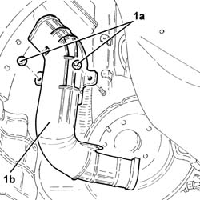
Applies to: engines: 2.5 V6, 3.2 V6; all production periods
1. Position a hydraulic jack under the rear suspension crossmember.
2. Undo the bolts (2a) and lower the rear suspension crossmember (2b), as necessary, using the hydraulic jack.
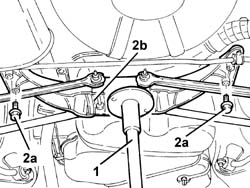
Applies to: engines: 2.5 V6, 3.2 V6; all production periods
1. Position the hydraulic jack under the fuel tank.
2. Undo the bolts fixing the fuel tank to the bodyshell.
3. Release the handbrake cables from the fastenings on the fuel tank.
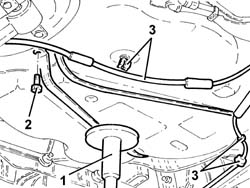
Applies to: engines: 2.5 V6, 3.2 V6; all production periods
1. Undo the heat shield fixing bolts near the fuel tank.
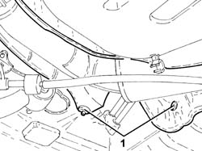
Applies to: engines: 2.5 V6, 3.2 V6; all production periods
Lower the fuel tank, as necessary, using the hydraulic jack.
1. Disconnect the rapid attachment for the fuel vapour pipe between the tank and the separator, separator side.
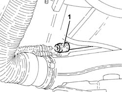
Applies to: engines: 2.5 V6, 3.2 V6; all production periods
Remove the float valve from the fuel tank, complete with fuel vapour pipe between the tank and the separator.
At the bench, separator the fuel vapour pipe between the tank and the separator from the float valve.
Applies to: engines: 2.5 V6, 3.2 V6; all production periods
Refitting
RemovingConnect the fuel vapour pipe between the tank and the separator to the float valve.
Place the float valve, complete with fuel vapour pipe between the tank and the separator, back in its housing in the fuel tank.
Connect the rapid attachment for the fuel vapour pipe from the tank to the separator, separator side.
Place the fuel tank back in its housing using the hydraulic jack.
Tighten the bolts fixing the heat shield near the fuel tank.
Secure the handbrake cables to the fastenings on the fuel tank.
Tighten the bolts fixing the fuel tank to the bodyshell.
Remove the hydraulic jack from under the fuel tank.
1. Place the rear suspension crossmember (1a) in its housing using the hydraulic jack (1b) and secure it tightening the bolts (1c) to the recommended torque.
 | Fastening | Component | Ø | Value (daNm) |
|---|---|---|---|---|
1c | Bolt | REAR CROSS-BEAM | M10 | (Bodyshell side) 6.2 ÷ 6.8 |
Remove the hydraulic jack from under the rear suspension crossmember.
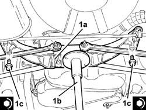
Applies to: engines: 2.5 V6, 3.2 V6; all production periods
Place the fuel filler pipe protection back in its housing and fasten it using the nuts.
Proceed with the refitting 4450B11 WHEEL (one) rear - R.R. (Right side).
Remove the car from the ramp.
Applies to: engines: 1.6 TS , 1.8 TS; all production periods
Removing
RefittingDisconnect battery negative pole.
 | Name | Connector |
|---|---|---|
- | Battery |
1. Unscrew fixing screws (1a) and move fuel vapour tank 1b) away from its seating.
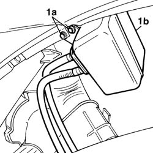
Applies to: engines: 1.6 TS , 1.8 TS; all production periods
1. Remove clamp (1a) and disconnect pipe (1b) from anti-capsizing valve.
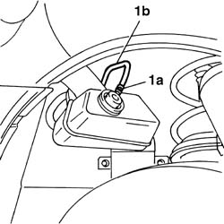
Applies to: engines: 1.6 TS , 1.8 TS; all production periods
1. Remove plastic guards of fuel delivery pipe and anti-evaportaion system pipe from car lower side.
2. Release anti-evaporation system pipe from its clamps.
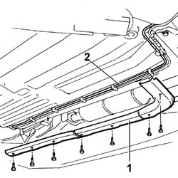
Applies to: engines: 1.6 TS , 1.8 TS; all production periods
1. Open baggage trunk, unscrew screws (1a) of baggage retaining hooks, then remove load compartment covering.
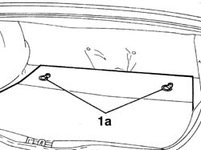
Applies to: engines: 1.6 TS , 1.8 TS; all production periods
7050B18 rear seat arm rest - r+r
1. Unscrew fixing nuts of cover protecting fuel pump and move it aside.
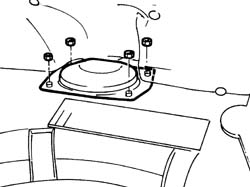
Applies to: engines: 1.6 TS , 1.8 TS; all production periods
3380A44 handbrake/linkage protection - r+r
Lift hand brake lever, unloose adjustment nut, then lower lever.
Lift the car.
1. Disconnect hand brake cables (1a) from joining bracket and fasteners on fuel tank.
2. Remove exhaust pipe last section (2a) and underlying shield against heat (2b).
Place a hydraulic jack under rear suspension cross member and unscrew its screws fixing it to body, lower jack and so cross member till fuel tank is released.
Place a hydraulic jack under fuel tank, then unscrew nuts shown by arrows and remove links supporting fuel tank.
Lower tank till pipe is released from retaining clamps on tank itself.
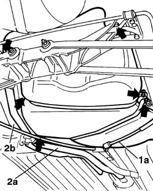
Applies to: engines: 1.6 TS , 1.8 TS; all production periods
Remove R-H front wheel and its shield against dust.
1. Disconnect pipe (1a) from can of anti-evaporation system and remove it.
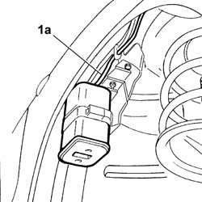
Applies to: engines: 1.6 TS , 1.8 TS; all production periods
Refitting
RemovingConnect anti-evaporation pipe to can.
Refit shield against dust and R-H front wheel.
Position anti-evaporation pipe back in its seating on tank and fasten it to tankt by means of ad-hoc clamps.
Position tank back in its seating and fix it to body, then remove hydraulic jack.
Position cross member back in its seating and fasten it to body, then remove hydraulic jack.
Refit shield against heat and exhaust pipe rear section.
Connect hand brake cables again.
Lower the car and adjust hand brake cable.
3380A44 handbrake/linkage protection - r+r
Refit cover protecting fuel pump.
7050B18 rear seat arm rest - r+r
Refit load compartment covering.
Fasten anti-evaporation system pipe and refit plastic guards of fuel and anti-evaporation system pipes.
Connect anti-evaporation pipe to anti-capsizing valve.
Fix fuel vapour tank in its seating.
Connect battery negative pole.